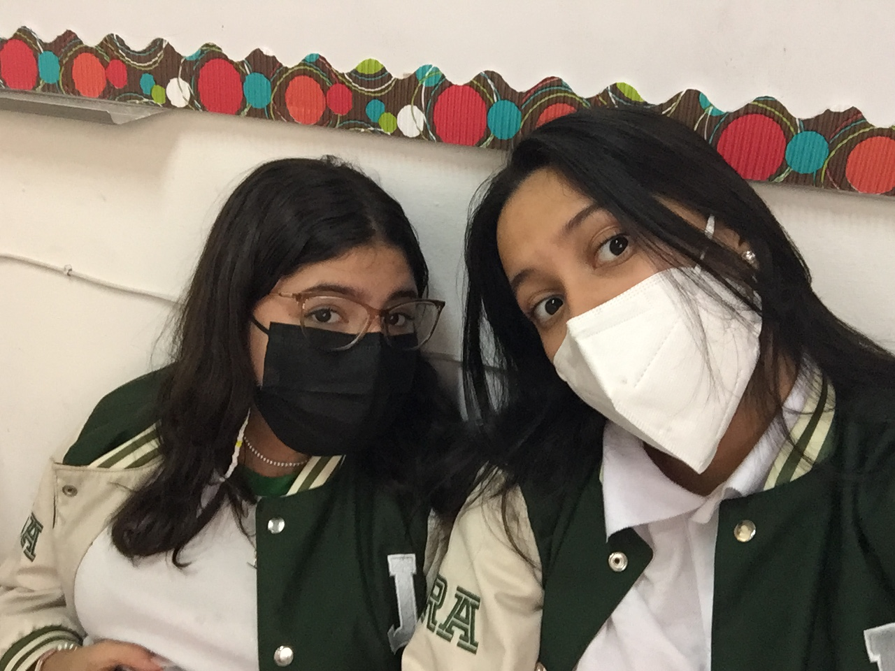

I wanted to make it a very special person in my life in whom I can trust everything without feeling judged, she makes my days happier and she is someone unconditional in my life since I have the joy of being able to have her in my life and have experiences and memories together
It's about my best friend and sister from another mother, Naomi Cruz, I can't imagine my days without her, I love her so much and she is my favorite person in my life, as well as she makes me happy when we see each other, we talk about everything and we we laugh at everything. With nothing more to say, I simply thank life for giving me this special person.
